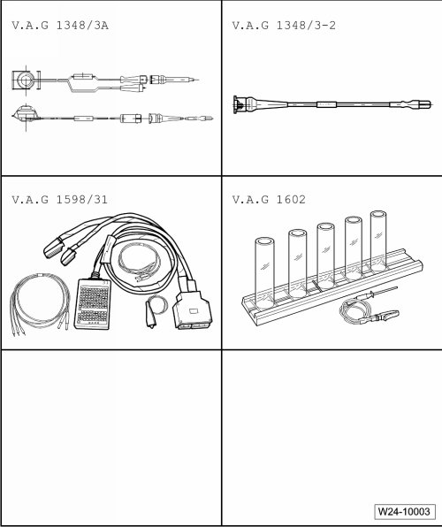
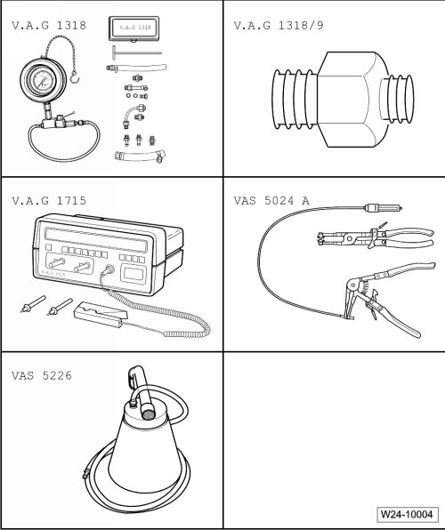

Multiport Fuel Injection (MFI)
Special Tools
Special tools, testers and auxiliary items required
• Connector test set (V.A.G 1594C)
• Adapter (V.A.G 1318/20)
• Adapter (V.A.G 1318/20-1)
• Attachment nozzle from wiring harness repair kit (VAS 1978)
• Hot air gun from wiring harness repair kit (VAS 1978)


Special tools, testers and auxiliary items required
• Remote control connection (V.A.G 1348/3A)
• Adapter cable (V.A.G 1348/3-2)
• Adapter cable, 121-pin (V.A.G 1598/31)
• Injector quantity testing device (V.A.G 1602)

Special tools, testers and auxiliary items required
• Pressure gauge (V.A.G 1318)
• Adapter (V.A.G 1318/9)
• Multi meter (V.A.G 1715)
• Pliers for spring type clips (VAS 5024 A)
• Diesel extractor (VAS 5226)